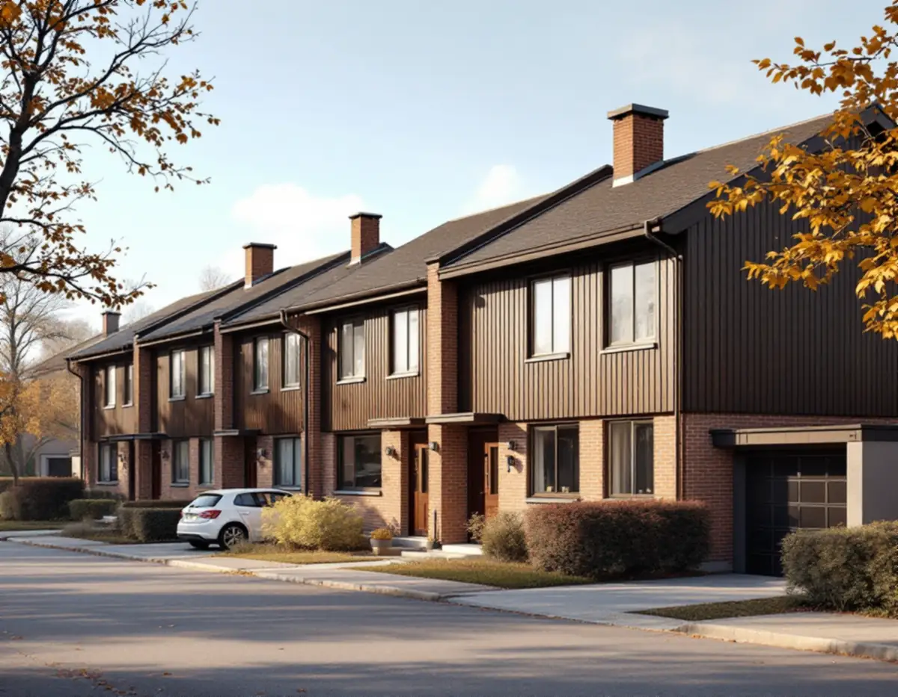
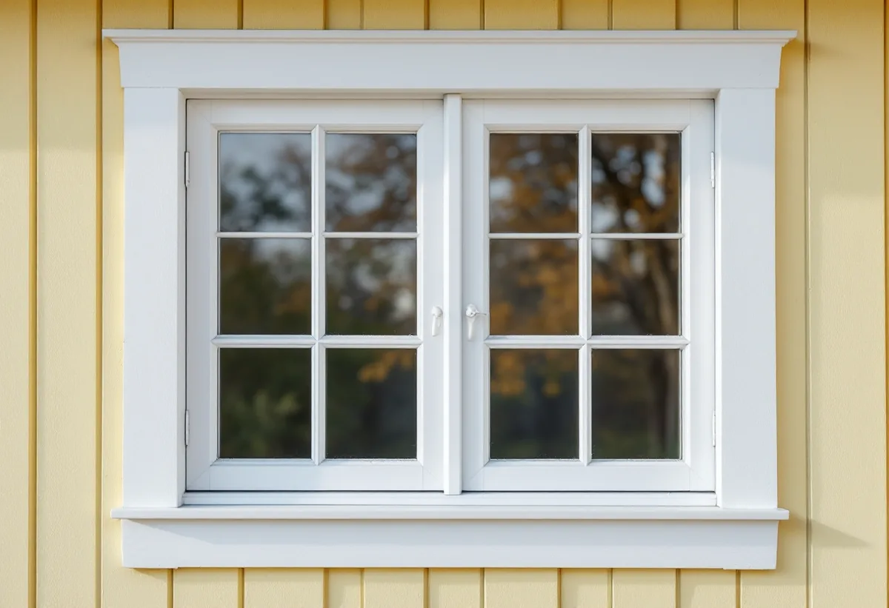

Besök och mätning
Vi mäter upp fönstren, noterar indelning, kulör och foder och bedömer skicket.
Täby har spröjsade fönster i villastäderna kring järnvägen, grupphus från 1950–70-talen med enhetliga fönster och elementhus där fönstren sitter i liv med plåtfasaden. Kommunens kulturmiljöunderlag ger råd för många av områdena. Geal Entreprenad AB byter och renoverar fönster i hela Täby, med gratis platsbesök och skriftligt kostnadsförslag.

Kommunens underlag Kulturmiljöer i Täby beskriver den äldre villabebyggelsen i Roslags-Näsby och Norra Viggbyholm med träfasader i ljusa kulörer eller falurött, fönsterfoder i kontrasterande färg och putsade fasader i milda pastellfärger. Fönstren är ofta spröjsade, och verandor och burspråk ger variation i fasaderna.
I Täby kyrkby och Byle växte villastäderna fram efter planer från 1907. Där är det vanligt med branta, ofta brutna tak, glasverandor och spröjsade fönster, och foder, vindbrädor och knutar är oftast vita. För alla fyra områdena ger underlaget samma råd: fönster bör utformas i trä och i likhet med originalutformningen.
Rådet gäller även när fönstren byts av energiskäl. Ett nytt träfönster kan få moderna glas och tätningar men ändå behålla spröjsindelning, proportioner och foder. Det är den kombinationen vi utgår från när vi föreslår fönster till ett äldre hus i Täby.

För grupphusområdena är råden ännu tydligare. Underlaget säger att ursprunglig färgsättning och ursprungliga fönsterformat ska behållas. Kvarteret Kammaren, ett välbevarat kedjehuskvarter från 1976 med bottenvåningar i fasadtegel och bruna fönstersnickerier, har rådet att originalformatet på fönstren ska behållas. I kvarteret Knäpparen, med villor från 1978–1979 i rödbrunt eller sandfärgat tegel, gäller att de bruna fönstersnickerierna ska behållas.
Norskogen i Näsbypark är ett grupphusområde med 197 bostäder i villor, parhus och radhus från 1957–1959. Fasaderna har finprofilerad fabrikslackad aluminiumplåt och fönster utan spröjs och foder som sitter i liv med fasaden. Där är det just avsaknaden av detaljer som ska bevaras, och ett fönster med grov karm eller påsatta foder skulle bryta mot det.
Byts fönstren i ett grupphusområde är det klokt att utgå från de ursprungliga måtten och kulören. Boverket påpekar dessutom att nya fönster med grövre snickerier släpper in mindre dagsljus, vilket märks i små rum.
I de generella råden skriver kommunen att äldre fönster kan vara av hög kvalitet, ofta är värda att underhållas och eventuellt kan kompletteras med invändigt energiglas. Boverkets energiguide pekar åt samma håll: tätning och energiglas på insidan är ofta det som lönar sig först, medan ett byte kan behöva göras tillsammans med andra renoveringar för att bli lönsamt.
Byts fönstren ändå bör de nya väljas med lågt U-värde för hela fönstret och med ett glas som passar läget. Boverket påpekar att olika glas ger olika solavskärmning, bullerdämpning och dagsljusinsläpp. Kontrollera märkningen när fönstren levereras, så att rätt U-värde sitter i rätt hål.
Ska fasaden tilläggsisoleras råder kommunen att fönstren flyttas ut, så att de sitter i samma förhållande till fasaden som tidigare. Planeras både fönster och isolering lönar det sig att göra arbetena i samma etapp, se fasadrenovering i Täby.
Täby kommun skriver att det inte behövs bygglov för fasadändringar på en- och tvåbostadshus, om byggnaden inte är särskilt värdefull, inte ligger i ett särskilt värdefullt område och inte har utökad lovplikt i detaljplanen. Andra ändringar som påverkar byggnadens karaktärsdrag kan också kräva lov, och den som är osäker kan få rådgivning av kommunen.
Kommunen råder också fastighetsägare att ta fram ritningarna på huset och fråga efter äldre handlingar, eftersom många hus har byggts till. Originalritningen visar hur fönstren var tänkta från början, och det blir ett bra underlag när nya fönster ska väljas. Ska takfönster eller kupor ses över samtidigt finns mer under takläggare i Täby.
Vi mäter upp fönstren, noterar indelning, kulör och foder och bedömer skicket.
Originalritningar och kulturmiljöunderlaget för området gås igenom.
Du får ett skriftligt kostnadsförslag med fönster, glas, montage och ROT-avdrag.
Fönstren beställs i trä och med samma format som originalet där råden säger så.
Fönstren monteras ett i taget, med drevning, tätning och nya bleck vid behov.
Vi kontrollerar märkning och funktion och går igenom resultatet med dig.
Att reparera eller byta ut fönster och att montera isolerglas eller bullerglas i ett småhus är rotarbete enligt Skatteverket. Avdraget är 30 procent av arbetskostnaden, högst 50 000 kr per person och år och högst 75 000 kr tillsammans med rutavdrag. Material och resor ger inget avdrag.
Äger ni huset tillsammans har var och en sitt avdragsutrymme. Geal drar avdraget direkt på fakturan.
Antal och storlek på fönstren, om de ska tillverkas i trä med spröjs efter förlaga, vilket glas som väljs, om foder och bleck behöver göras om och om fönstren ska flyttas ut i samband med en tilläggsisolering. Efter ett gratis platsbesök får du ett skriftligt kostnadsförslag.
Byta eller renovera fönster.
Fönsterbyte i Stockholm →Takbyte, takbesiktning och plåtarbeten.
Takläggare i Täby →Näsbypark, Viggbyholm och Gribbylund.
Takrenovering i Täby →Detaljplan, Q-märkning och VA-inkoppling.
Attefallshus i Täby →Kulör per kvarter och provytor.
Fasadmålning i Täby →Radhuslängor, villor och nya gästhus.
Badrumsrenovering i Täby →Tillbyggnad, gästhus och renovering.
Byggföretag i Täby →Tegelvillor, kedjehus och grupphus i Täby.
Fasadrenovering i Täby →Gårdarnas fönster, kulör och spröjs.
Fönsterrenovering i Täby →Villor, radhus och kedjehus från 1970- och 80-talen.
Golvläggare i Täby →Laga och slipa golvet efter en riven vägg.
Golvslipning i Täby →Grupphus, radhus och villor vid banan.
Köksrenovering i Täby →Trävillor, puts och kedjehus i Täby.
Målare i Täby →Stationsvillor, funkis och grupphus i Täby.
Plåtslagare i Täby →Verandor, fönster och carport.
Snickare i Täby →Betongpannor, kedjehus och tegelvillor.
Takbyte i Täby →Ny tapet mot lister och foder.
Tapetsering i Täby →Byle, kyrkbyn och detaljplanen.
Tillbyggnad i Täby →Ett hus som går att bo kvar i.
Totalrenovering i Täby →